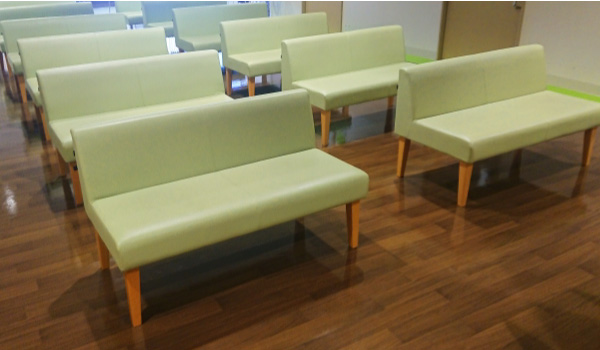
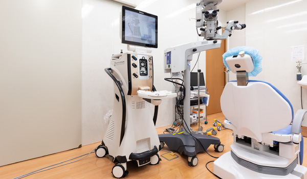
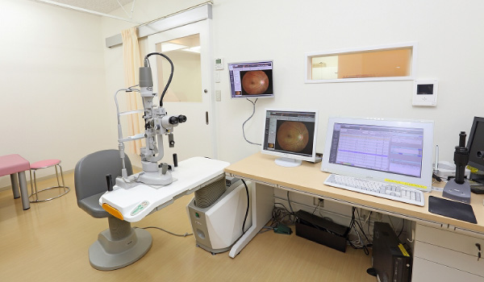
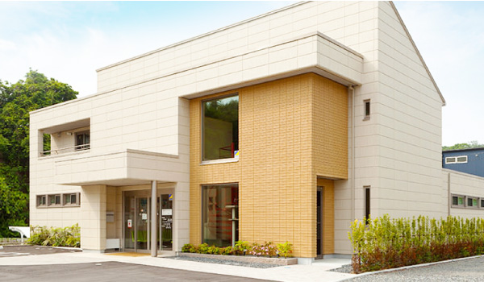

施設案内
当院の施設は明るい内装、そして診療では緊張しないよう温かみのある空間になっております。
また、入ってすぐに笑顔あふれる受付がありアットホームな雰囲気が感じられるかと思います。
受付
スタッフ一同、笑顔でお待ちしております。

待合室
明るい雰囲気の待合室にて、ゆったりくつろいでお待ちいただけます。一緒にお連れのお子様も遊びながら待てるように、子ども待合室にはおもちゃもご用意しております。

検査室
最新式の検査機器を取りそろえました。

診察室
患者様のプライバシーを確保した空間にて丁寧で分かりやすい説明を心がけております。

外観
診療前の患者様の不安を少しでも和らげられる様に務めると同時に、バリアフリー設計にて
出来る限り段差を少なくし、ベビーカーや車椅子でおこしの患者様への配慮を致しております。
※写真をクリックすると拡大されます。